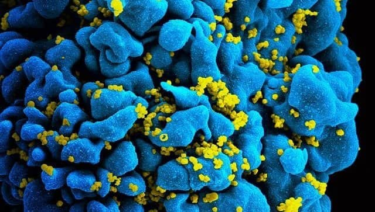
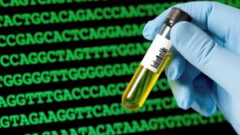
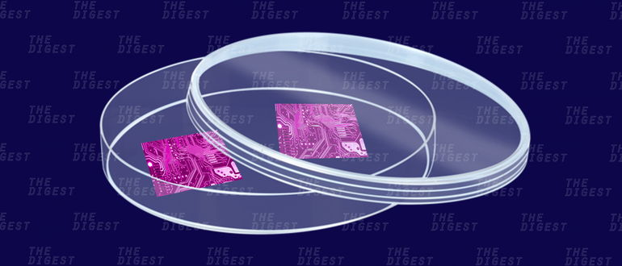
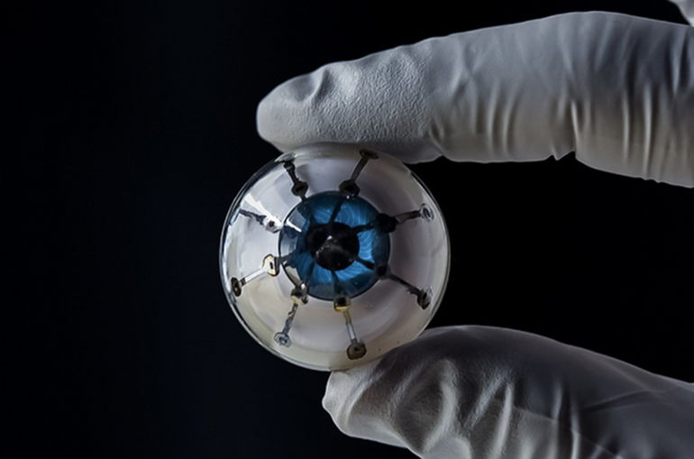
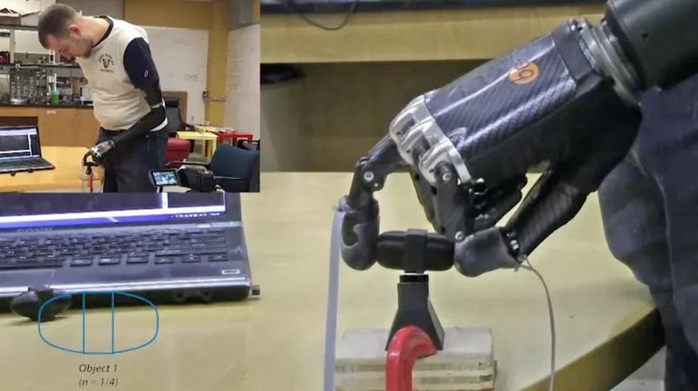

Биоинженерия - научная дисцпилина будущего
МЕНЮ
на главную
Наши новости
наши пользователи
Участие в научных проектах
Научные материалы
Посетить наш центр
создать запись
Наши статьи
Моделирование клетки
Отправил:Pasha_cherepok

"Одна доза наночастиц, начиненных нашим "веществом-1", защищала Т-клетки мышей от массовой гибели и удерживала концентрацию вирусных частиц на минимальном уровне на протяжении трех недель. "Вещество-1" способно бороться как с обычными клиническими штаммами ВИЧ, так и с его "неуязвимыми" версиями", — пишут Кэрен Андерсон (Karen Anderson) и ее коллеги из Йельского университета (США).
дата отправки:19.08.2019
репост
Ginkgo Bioworks хочет превратить человеческие клетки в «фабрики по требованию»
Отправил:Igor_Lopouh

Для производства лекарств и различных продуктов химической и фармацевтической промышленности сегодня используются огромные заводы, на которых происходят сотни химических превращений для создания нужных ингредиентов. Но ведь давно известно, что одна из самых сложноорганизованных «химических лабораторий» находится буквально в каждом их нас — это клетки нашего организма. И, по словам представителей компании Ginkgo Bioworks, производить различные продукты при помощи клеток — не такая уж и плохая затея.
Видео с подробной информацией:
дата отправки:22.08.2019
репост
Ученые собираются вырастить живой нейронный компьютер
Отправил:Max_zaharov

Будут ли компьютеры будущего так же, как и сейчас собираться на заводах, или же их будут в прямом смысле выращивать в лабораториях, как клеточные культуры? Таким вопросом настолько сильно заинтересовалась команда биологов и компьютерных инженеров Лихайского университета (Пенсильвания, США), что даже сумела выбить грант в размере 500 000 долларов у Национального научного фонда. Ученые хотят разработать компьютер, состоящий из живых клеток и запрограммировать его на выполнение вычислительных процессов. Детали предстоящего проекта пока очень скудны. Получатели гранта говорят, что они собираются использовать живые клетки (хотя, о каком именно типе клеток идет речь, ученые пока не говорят) для создания живой нейронной сети. Для этих целей ученые прибегнут к оптогенетике – методике управления клетками с помощью воздействия на них света, и обучат клетки распознавать цифровые значения, необходимые для выполнения вычислений.
дата отправки:11.04.2019
репост
С помощью 3D-печати ученые создали бионический глаз
Отправил:Dima_Ivanov

Используя технологии 3D-печати ученые из Университета Миннесоты создали решетку фоторецепторов на полусферической подложке. В перспективе технология позволит создавать с помощью 3D-печати бионические глаза и возвращать зрение полностью ослепшим людям. В будущем бионические глаза, считают исследователи, функционально ничем не будут отличаться от настоящих. А в некоторых случаях, возможно, и превосходить последние. Живой глаз воспринимает свет благодаря размещенным на сетчатке фоторецепторным нейронам, переводящим видимый свет в электрический сигнал. В созданной на 3D-принтере учеными из Университета Миннесоты модели роль фоторецепторных нейронов играют полупроводниковые диоды. Последние годы инженеры активно исследуют возможность создания бионических глаз. Некоторые созданные в прошлом прототипы были успешны испытаны на людях, однако изготовление таких протезов обходится очень дорого, поскольку каждое устройство приходится собирать буквально вручную. В перспективе технологии 3D-печати могут существенно удешевить и упростить процесс создания подобных имплантатов, сделав их доступными для более широкого круга нуждающихся людей.
Подробнее о печати органов:
дата отправки:19.08.2019
репост
Ученые разработали электронную кожу, позволяющую через протез чувствовать боль
Отправил:Vlad_Zaharov

Исследователи из Университета Джонса Хопкинса (США) разработали «электронную кожу», имитирующую способности настоящего кожного покрова, сообщает издание IEEE Spectrum. Разработку предлагают использовать с искусственными протезами, благодаря чему можно будет вернуть возможность через искусственную конечность ощущать боль. Почему именно боль? Главе исследования по разработке электронной кожи Нитишу Тхакору, профессору биоинженерии Университета Джонса Хопкинса постоянно задают этот вопрос. Все дело в практическом смысле. Болевые рецепторы, находящиеся в коже, помогают нам защищаться от получения повреждений. Например, от острого ножа или горячей сковородки. В том же самом смысле люди с ампутированной конечностью смогут полагаться на восприятие боли, которая будет передаваться через искусственную кожу и протез, что позволит защититься от повреждения последнего, говорит Тхакор. Также ученый предлагает более комплексное и в какой-то степени даже поэтическое объяснение: «Мы можем вернуть человеку утраченное чувство восприятия: от легкого прикосновения, до сильного давления и болевых ощущений. Я думаю, что это сделает искусственные протезы более ‘живыми’».
так же немного расслабляющей музыки:
дата отправки:19.08.2019
репост